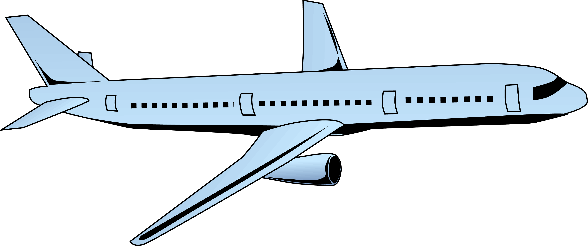

<div class="main">
  <div class="description-container">

<div  class="description container-fluid">
  Around 2.4% of global CO2 emissions come from aviation.
   Together with other gases and the water vapour trails produced by aircraft,
   the industry is responsible for around 5% of global warming.
   A return flight from London to San Francisco emits around 5.5 tonnes of
   CO2 equivalent (CO2e) per person – more than twice the emissions produced by a
   family car in a year, and about half of the average carbon footprint of someone
    living in Britain. Even a return flight from London to Berlin emits around 0.6
    tonnes CO2e
    – three times the emissions saved from a year of recycling.
    Yet reducing the amount we fly can seem daunting, especially when we have to
    travel regularly for business or if we enjoy holidays abroad. But there are ways
     each of us can lessen the impact of our travel, and when we do fly, keep the
      emissions to a minimum. Do you want to calculate the footprint of your flight?
      Catch the plane, literally!

</div>
<div class="description-img"> <a (click)="goTo()" >  </a>  </div>

<div class="footer">
  <p>The content on this site is provided by Climatiq Api</p>

 </div>

  </div>


</div>
